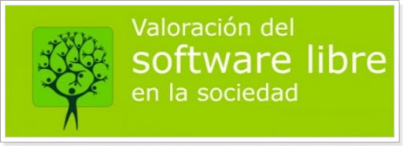

¿Qué es el software Libre?
Libre, en software Libre se refiere a libertad, no a precio. Se ha utilizado en este sentido desde la década de 1980, la primera definicion completa y documentada parece ser la que apaarecio en el Boletín de GNU, Vol.1 Nro. 1, publicado en enero de 1989. En concreto las cuatro libertades que definen al Software Libre:
Terminología
Código abierto
El ingles parece ser lka única lengua con una anbigÜedad tan marcada entre libertad y precio (free puede signifar tanto libre como gratuito). Cuando lo traducimos a otros lenguajes , Free Software se convierte en logiciels libre en frances . software libre en castellano, software librero en portugués Fri Software en danés o cualquiera que sea el termino en el idioma local equivalente que se refiera a libertad